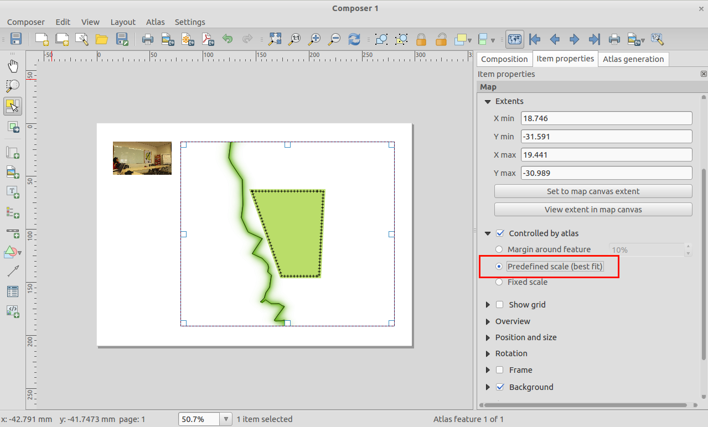

Registro de Alterações no QGIS 2.4¶
Registo de alterações para o próximo lançamento do QGIS 2.4.0. A ênfase deste lançamento foi dada essencialmente no aperfeiçoamento e no desempenho - adicionamos várias novas funções, pormenores e melhorias de modo a tornar a interface mais congruente e visualmente mais profissional (esperamos que de mais fácil uso também). O Editor (usado na criação de mapas prontos a imprimir) foi um dos pontos mais focados para torná-lo numa plataforma mais viável na criação de cartografia de qualidade superior.
Sempre que são adicionadas novas funções ao software existe a possibilidade de ocorrerem novos bugs - se encontrar algum nesta versão, por favor comunique-nos através do formulário QGIS Bug Tracker <http://hub.qgis.org>`__.
Gostaríamos de agradecer ao programadores, documentadores, testers, e toda a malta que está por aí que voluntaria o seu tempo e esforço (ou investe em pessoas para o fazer).
From the QGIS community we hope you enjoy this release! If you wish to donate time, money or otherwise get involved in making QGIS more awesome, please wander along to qgis.org and lend a hand!
Finalmente queremos agradecer aos nossos patrocinadores oficial pelo suporte financeiro de valor inestimável que fornecem a este projecto:
- Patrocinador de OURO Asia Air Survey, Japão
- Patrocinador de PRATA: G.A.I.A. mbH, Alemanha
- Patrocinador de PRATA: Estado de Vorarlberg , Áustria
- Patrocinador de BRONZE: www.molitec.it, Itália
- Patrocinador de BRONZE: www.argusoft.de, Alemanha
- Patrocinador de BRONZE: www.openrunner.com, França
- Patrocinador de BRONZE: www.eschenlaub.de, Alemanha
A current list of donors who have made financial contributions large and small to the project can be seen on our donors list.
If you would like to make a donation or sponsor our project, please visit our sponsorship page for details. QGIS is Free software and you are under no obligation to do so. Sponsoring QGIS helps us to fund our six monthly developer meetings, maintain project infrastructure and fund bug fixing efforts.
- Geral
- Novidade: Gerar nome da banda com NetCDF EXTRA_DIM
- Novidade: Aplicando escala e diferença a dados raster
- Novidade: Barra de cálculo rápido do campo na tabela de atributos
- Novidade: Pré-visualização com cores diferentes no compositor e da área do mapa.
- Novidade: Arquivos de camada QLR QGIS
- Novidades: Novas funções de expressão
- Novidade:Copiar, colar e arrastar e soltar cores
- Novidade: Renderização multi-threaded
- Rotular
- Compositor de impressão
- Complementos
- Simbologia
Geral¶
Novidade: Gerar nome da banda com NetCDF EXTRA_DIM¶
O NetCDF fornece informações dimensionais extra. Essas informações fornecem metadados em cada faixa. Estes metadados podem ser usados para explicar o nome de cada banda. Por exemplo, as faixas de um arquivo NetCDF representa a temperatura a uma dada profundidade. Para o usuário, é mais fácil para selecionar uma banda com informação de profundidade, em vez de apenas o número banda.

Novidade: Aplicando escala e diferença a dados raster¶
Em algumas fontes de dados raster os dados são armazenados como números inteiros com uma escala e um deslocamento nos metadados, que podem ser utilizados para obter os dados corretos. QGIS aplica uma varredura nesses dados para fornecer ao usuário informações corretas na legenda, histograma e identificação.

Novidade: Barra de cálculo rápido do campo na tabela de atributos¶
Para aqueles que trabalham com campos calculados na tabela de atributos do vetor, o novo barra permite o cálculo rápido para atualizar os valores em uma coluna de forma rápida e fácil.

Novidade: Pré-visualização com cores diferentes no compositor e da área do mapa.¶
Um recurso realmente inovador que foi adicionado ao 2.4 é o suporte para tons de cinza e daltonismo. Isto permite-lhe visualizar como as pessoas com daltonismo perceberá sua cartografia e layout do seu mapa, ou como seu mapa vai ficar se ele é impresso em escala de cinza. Você pode ler mais sobre este novo recurso aqui.

Novidade: Arquivos de camada QLR QGIS¶
Adicionado suporte para arquivos de definição de camada QGIS ou simplesmente QLR (ver http://nathanw.net/2014/03/12/qgis-qlr/). Arquivo QLR é um arquivo que aponta para os dados, contém todos os estilos, e outras informações. Você precisa apenas adicionar esse arquivo e ele via fazer toda a mágica para você. QLR torna fácil adicionar mesma camada de vários documentos mapa, herdando todas as propriedades que foram estabelecidos e funciona com qualquer camada de suporte no QGIS, espera-se camadas especiais de plugin.
Novidades: Novas funções de expressão¶
Temos algumas novas funções disponíveis no construtor de expressão.
- perímetro da geometria (limites)
- os limites de largura e altura da caixa (bounds_width/bounds_height)
- min/max x/y coordenadas (xmin/xmax/ymin/ymax)
- nova função de mudança de linha que retorna um corte de string para um número mínimo ou máximo de caracteres

Novidade:Copiar, colar e arrastar e soltar cores¶
Agora você pode copiar, colar, arrastar e soltar cores entre qualquer widget de entrada de cor no QGIS. Veja esse artigo Para mais informações sobre como esse novo recurso funciona. Códigos de cores hexadecimais e seqüências de caracteres RGB também podem ser colados sobre a botões de cor para permitir a importação de cores de fora do QGIS.

Novidade: Renderização multi-threaded¶
Esta é uma característica que nós simplesmente não pode representar a com uma imagem - QGIS agora suporta renderização multi-threaded! O que isto significa é que, ao desenhar o mapa, QGIS irá dividir o trabalho de desenho entre todos os núcleos da sua CPU, tornando o processo mais eficiente e ágil. Isso significa que você não precisa mais esperar para o ver no mapa para atualizar antes que você pode mover, ou zoom novamente. A atualização da apresentação do mapa também será incrementada, permitindo que você veja se o mapa está posicionado corretamente no início do processo de desenho. Dê uma olhada neste artigo <http://www.lutraconsulting.co.uk/casestudies/qgis-multi-threaded-rendering> __ para uma visão mais detalhada do sistema de renderização multi-threaded. Você vai encontrar algumas opções na caixa de diálogo Configurações do QGIS que permitem gerenciar o comportamento de renderização de multi-threaded.

Rotular¶
Novidade: Rotular feições várias vezes¶
Longas filas (como linhas de contorno ou estradas) pode agora ser rotulada repetidamente em intervalos regulares. Pode-se escolher entre as unidades de milímetros e mapa para especificar o intervalo de repetição. Na época do lançamento ainda há um problema com o ajuste “Mesclar linhas conectadas para evitar duplicado”

Compositor de impressão¶
Novidade: Melhorias para os itens de imagem no compositor¶
O item de imagem na compositor é agora ‘atlas friendly’ - você pode usar uma expressão para definir quais imagem devem ser mostrada para cada página do atlas. Agora também é possível definir o modo de redimensionamento (zoom, corte, alongamento, etc) para a imagem em relação ao seu tamanho do quadro e dimensões. Você também pode especificar o posicionamento da imagem em relação à sua moldura usando a nova colocação propriedade item.

Novidade:Modo de escalas pré-definidas para os mapas do Atlas¶
Ao trabalhar com os itens do mapa do atlas, agora você pode especificar um modo de escala pré-definida para o mapa. Ele usará a melhor opção de ajuste da lista de escalas pré-definidas em suas configurações de propriedades do projeto (veja Projeto -> Propriedade do Projeto -> Geral -> Escalas de Projeto para configurar essas tabelas predefinidas).

Novidade: Tabelas de atributos aprimorados no compositor¶
Fizemos uma série de melhorias para a capacidade de exibir as tabelas em seus layouts compositor:
- Foi adicionado suporte para reordenar colunas dentro de uma tabela
- Adicionado suporte para expressão baseada em colunas
- Agora você pode definir o alinhamento das colunas de tabela individuais, e também especificar o alinhamento de células de cabeçalho da tabela
- O conteúdo da tabela pode ser filtrada por uma expressão

Novidade: Melhorias gerais compositor¶
Há uma série de adições ao compositor mapa para facilitar a vida ao trabalhar em modo de composição mapa:
- Adicionado botão para ver medida item de mapa atual no mapa principal canvas
- Capacidade de exportar imagens SVG do compositor com camadas
- Capacidade de definir um estilo para a barra de escala
- Capacidade de definir um estilo para as molduras dos elementos

Novidade: Melhorias para quadros HTML¶
Melhorias foram feitas em quadros compositor HTML. Há um novo botão adicionar estrutura para criar vários quadros vinculados. Também melhoramos o algoritmo para as interrupções das páginas, para gerenciar os quadros em mais paginas.

Complementos¶
Novidade: Plugin Meta pesquisa¶
MetaBusca é um plugin QGIS que é usado para consultar os serviços de catálogo de metadados, que são compatíveis com o padrão “OGC Catálogo de Serviços da Web” (CSW). Este plugin fornece uma interface amigável para realizar essas pesquisas no QGIS.

Simbologia¶
Novidade: Preenchimento Shapeburst¶
Com QGIS 2.4, o gradiente shapeburst permite o preenchimento dos polígonos com uma cor se formou a partir do perímetro da linha central do polígono. Para saber mais, leia <http://nyalldawson.net/2014/06/shapeburst-fill-styles-in-qgis-2-4/?utm_source=rss&utm_medium=rss&utm_campaign=shapeburst-fill-styles-in-qgis-2-4>`__.

Novidade: Indicador de distância para a linha:¶
Ao usar uma linha de marcação ao longo de uma linha ou polígono de ponta, agora você pode especificar um ** deslocamento** de modo que a linha de marcação começa uma distância definida a partir do início da linha. Se uma linha de marcação é definido como “primeiro vértice” ou no modo “último vértice”, que esse deslocamento vai controlar o quão longe ao longo da linha a partir do vértice do marcador é colocado.

Novidade: Renderizador de polígono invertido¶
Um novo processador foi adicionado para os recursos de polígonos, o que lhe permite estilizar tudo ** fora ** de polígonos. Isto pode ser útil para destacar as áreas, ou para criar máscaras cartográficas. Quando usado com o novo estilo shapeburst, agora você pode produzir uma saída, como mostra a imagem para esta entrada.
** Nota: ** A nova versão do plugin de máscara ajuda a criar facilmente camadas de máscara da seleção atual, etiqueta caracteriza somente naquelas áreas, além de gerar uma máscara automática no Atlas geração mapa.

Novidade:¶
Na versão anterior foi possível salvar estilo nas camadas postgres, agora será possível para as camadas SpatiaLite também. | Estas funções permitem incorporar diferentes estilos dentro de um recipiente SpatiaLite simplificando o compartilhamento de dados e sua apresentação. | Um vídeo tutorial desta funcionalidade pode ser encontrada aqui http://pvanb.wordpress.com/2014/05/15/saving-layer-styles-to-your-spatialite-database/